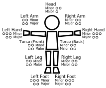

Most role-playing game systems utilize a “hit points” (HP) system, but in GUTS+, a character’s health is determined by the number of injuries sustained to various parts of their body and the strain placed upon their mind and body.
The following chart shows the areas of the body that can be injured and how many times an injury can be sustained before it becomes fatal:

Whenever you take an injury, mark it on your character sheet. If a part of the body sustains the maximum number of Minor injuries that it can have, the next Minor injury instantly becomes a Major injury, and if the maximum number of Major injuries is taken, use of that body part becomes limited and will affect what your character can do. If you receive any Major injuries beyond the maximum number, you lose use of that body part completely. Losing use of either of your character’s Hands reduces your inventory space, and “losing the use of” your character’s Head means your character immediately becomes unconscious.
If your character receives more than 6 Major (non-Head) injuries (i.e. 7 or more), they will fall unconscious. If they are not recovered before enough time passes, they will die, so be careful!
In addition to Injuries, performing a taxing action for a sustained period of time can add Strain to your character. If your character receives more than 10 points of Strain before they are able to remove any Strain, they can either receive injuries or be knocked unconscious from exertion.
Any additional strain received from performing actions inflicts a Minor injury to the body part that is performing it. If you are using magic, strain received inflicts injuries to the Head.
Recovering from an injury is a relatively slow process if not deliberately focused on. Untreated, A minor injury will heal at the rate of 1 injury per in-game day—you choose what injury you wish to be healed—while a major injury will heal at the rate of 1 injury per 5 in-game days.
If you wish to focus on allowing your injuries to heal, resting will allow your injuries to heal twice as fast: 1 minor injury per 1/2 day and 1 major injury per 2 1/2 days. If you or someone in your group has any sort of medical stats, then they can help treat your wound to speed up recovery even more. Some treatments will be instantaneous while others might speed it up to just a couple of hours for recovery. Eating food can also help heal injuries.
Strain is slightly different: once the source of strain is removed, it begins going down immediately at a rate of approximately 1 point per minute. Depending on the type of strain and how soon you resume the stressful task, your strain might be removed all at once or after every couple of turns if in Combat.